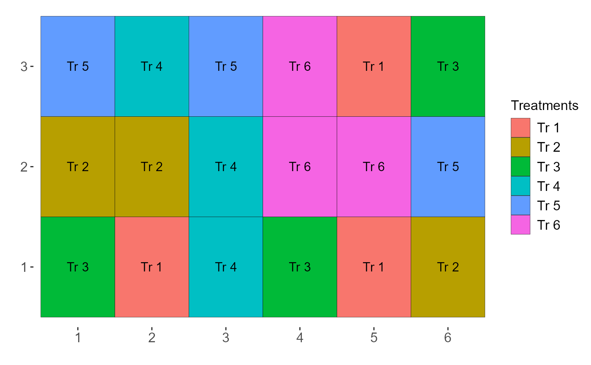
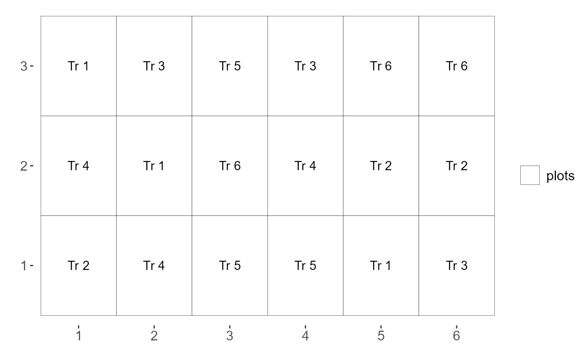
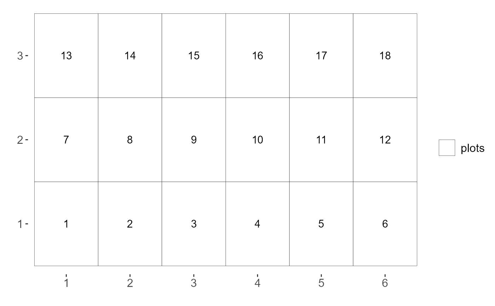
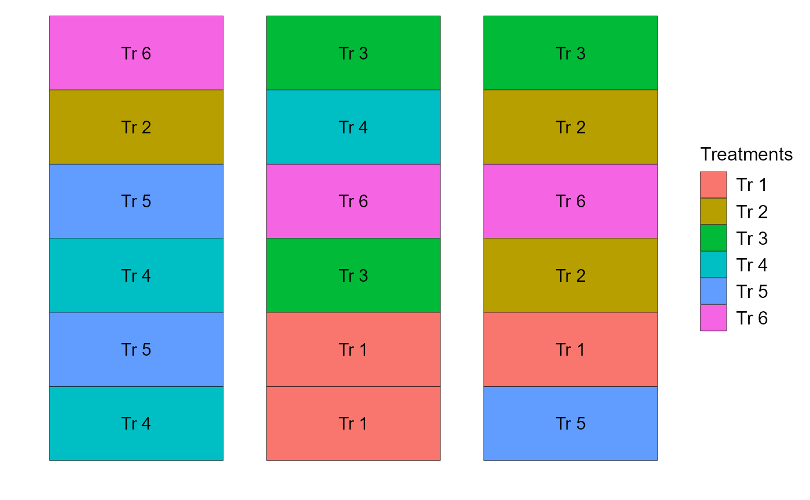
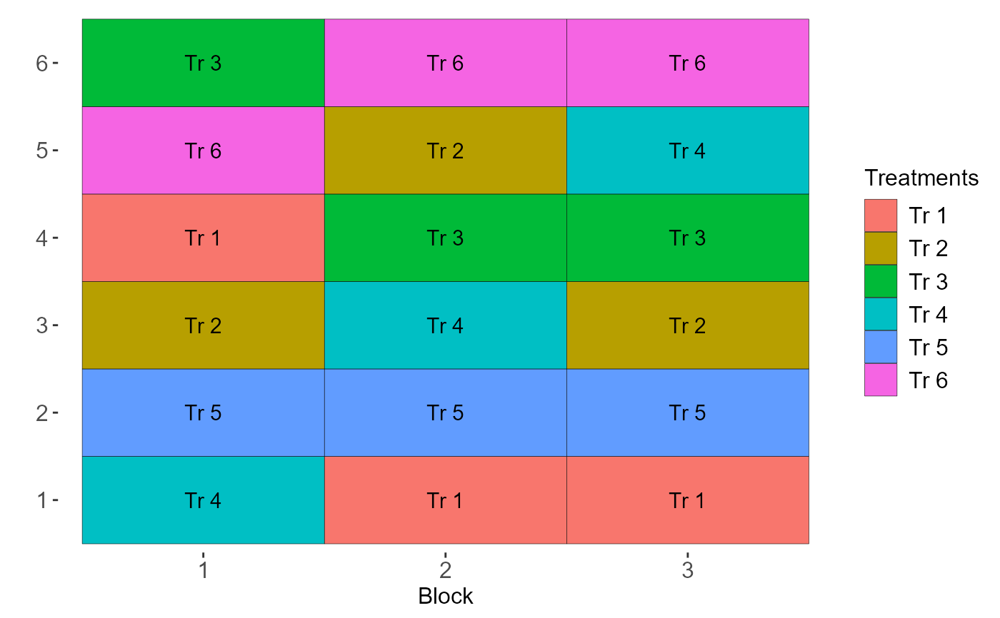
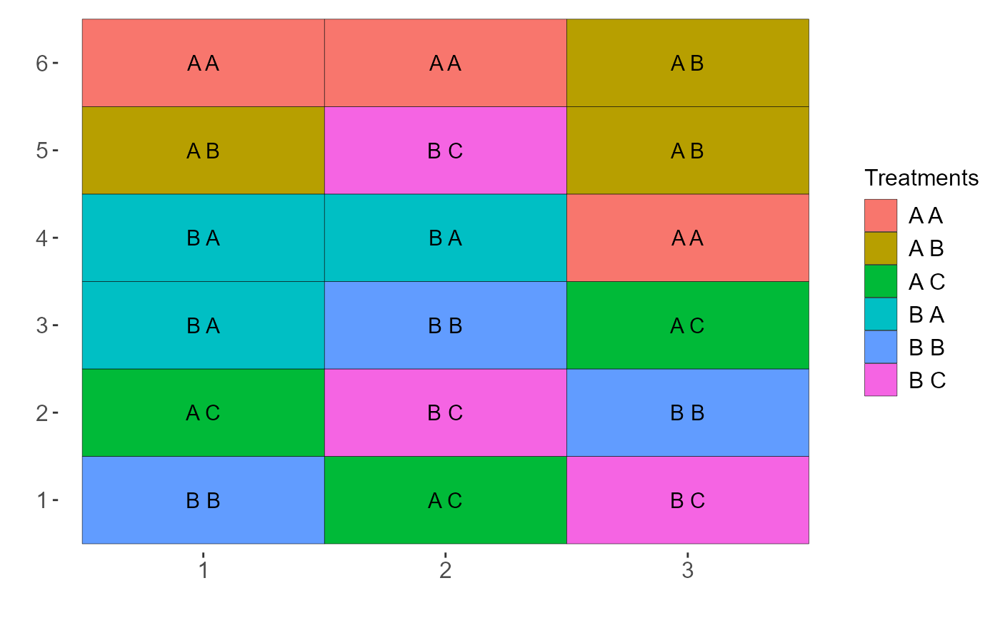
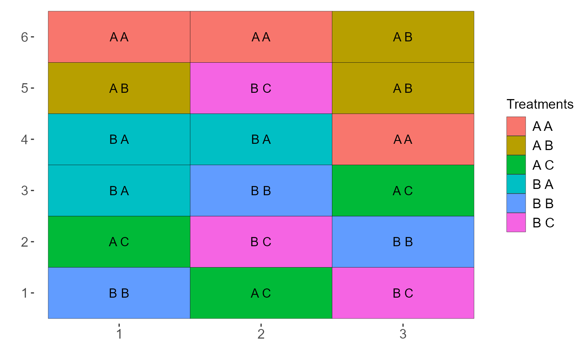

Utils: Experimental sketch
sketch.RdExperimental sketching function
sketch(
trat,
trat1 = NULL,
trat2 = NULL,
r,
design = "DIC",
pos = "line",
color.sep = "all",
ID = FALSE,
add.streets.y = NA,
add.streets.x = NA,
label.x = "",
label.y = "",
axissize = 12,
legendsize = 12,
labelsize = 4,
export.csv = FALSE,
comment.caption = NULL
)Arguments
- trat
Vector with factor A levels
- trat1
Vector with levels of factor B (Set to NULL if not factorial or psub)
- trat2
Vector with levels of factor C (Set to NULL if not factorial)
- r
Number of repetitions
- design
Experimental design (see note)
- pos
Repeat position (line or column),
- color.sep
Color box
- ID
plot Add only identification in sketch
- add.streets.y
Adds streets by separating treatments in row or column. The user must supply a numeric vector grouping the rows or columns that must be together. See the example.
- add.streets.x
Adds streets by separating treatments in row or column. The user must supply a numeric vector grouping the rows or columns that must be together. See the example.
- label.x
text in x
- label.y
text in y
- axissize
Axis size
- legendsize
Title legend size
- labelsize
Label size
- export.csv
Save table template based on sketch in csv
- comment.caption
Add comment in caption
Value
Returns an experimental sketch according to the specified design.
Note
The sketches have only a rectangular shape, and the blocks (in the case of randomized blocks) can be in line or in a column.
For the design argument, you can choose from the following options:
design="DIC"Completely randomized design
design="DBC"Randomized block design
design="DQL"Latin square design
design="FAT2DIC"DIC experiments in double factorial
design="FAT2DBC"DBC experiments in double factorial
design="FAT3DIC"DIC experiments in triple factorial
design="FAT3DBC"DBC experiments in triple factorial
design="PSUBDIC"DIC experiments in split-plot
design="PSUBDBC"DBC experiments in split-plot
design="PSUBSUBDBC"DBC experiments in split-split-plot
design="STRIP-PLOT"Strip-plot DBC experiments
For the color.sep argument, you can choose from the following options:
design="DIC"use "all" or "none"
design="DBC"use "all","bloco" or "none"
design="DQL"use "all", "column", "line" or "none"
design="FAT2DIC"use "all", "f1", "f2" or "none"
design="FAT2DBC"use "all", "f1", "f2", "block" or "none"
design="FAT3DIC"use "all", "f1", "f2", "f3" or "none"
design="FAT3DBC"use "all", "f1", "f2", "f3", "block" or "none"
design="PSUBDIC"use "all", "f1", "f2" or "none"
design="PSUBDBC"use "all", "f1", "f2", "block" or "none"
design="PSUBSUBDBC"use "all", "f1", "f2", "f3", "block" or "none"
References
Mendiburu, F., & de Mendiburu, M. F. (2019). Package ‘agricolae’. R Package, Version, 1-2.
Examples
Trat=paste("Tr",1:6)
#=============================
# Completely randomized design
#=============================
sketch(Trat,r=3)

sketch(Trat,r=3,pos="column")
sketch(Trat,r=3,color.sep="none")

sketch(Trat,r=3,color.sep="none",ID=TRUE)
#> plots r trat x y
#> 1 1 1 Tr 1 1 1
#> 2 2 1 Tr 4 2 1
#> 3 3 1 Tr 3 3 1
#> 4 4 1 Tr 2 4 1
#> 5 5 2 Tr 1 5 1
#> 6 6 2 Tr 2 6 1
#> 7 7 3 Tr 2 1 2
#> 8 8 3 Tr 1 2 2
#> 9 9 1 Tr 6 3 2
#> 10 10 1 Tr 5 4 2
#> 11 11 2 Tr 5 5 2
#> 12 12 2 Tr 3 6 2
#> 13 13 2 Tr 4 1 3
#> 14 14 3 Tr 5 2 3
#> 15 15 3 Tr 4 3 3
#> 16 16 2 Tr 6 4 3
#> 17 17 3 Tr 3 5 3
#> 18 18 3 Tr 6 6 3

sketch(Trat,r=3,pos="column",add.streets.x=c(1,1,2,2,3,3))

#=============================
# Randomized block design
#=============================
sketch(Trat, r=3, design="DBC")
sketch(Trat, r=3, design="DBC",pos="column")

sketch(Trat, r=3, design="DBC",pos="column",add.streets.x=c(1,1,2))
 #=============================
# Completely randomized experiments in double factorial
#=============================
sketch(trat=c("A","B"),
trat1=c("A","B","C"),
design = "FAT2DIC",
r=3)
sketch(trat=c("A","B"),
trat1=c("A","B","C"),
design = "FAT2DIC",
r=3,
pos="column")

#=============================
# Completely randomized experiments in double factorial
#=============================
sketch(trat=c("A","B"),
trat1=c("A","B","C"),
design = "FAT2DIC",
r=3)
sketch(trat=c("A","B"),
trat1=c("A","B","C"),
design = "FAT2DIC",
r=3,
pos="column")
